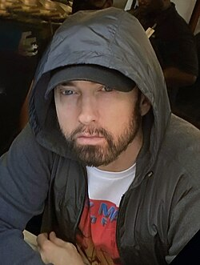

Eminem, conhecido artístico de Marshall Bruce Mathers III, nasceu em St. Joseph, Missouri, em 17 de outubro de 1972. Desde pequeno, enfrentou dificuldades financeiras e familiares, o que moldou sua personalidade e carreira musical. Ele se destacou em batalhas de rap e, em 1999, lançou "The Slim Shady LP", que venceu o Grammy Award de Melhor Álbum de Rap. Seu álbum mais famoso, "The Marshall Mathers LP", se tornou o álbum mais vendido da história dos Estados Unidos. Eminem também estrelou o filme semi-biográfico "8 Mile", onde sua música "Lose Yourself" ganhou o Oscar de Melhor Canção Original. Apesar de suas letras serem controversas, Eminem continua a ser um ícone do hip-hop, vendendo milhões de álbuns e conquistando prêmios de reconhecimento
Eminem (1972) é um rapper, compositor e produtor musical norte-americano. O álbum "The Marshall Mathers”, na categoria artista-solo, foi considerado o mais vendido na história musical dos EUA.
Eminem (1972) é um nome artístico de Marshal Bruce Mathers III, nascido em St. Joseph, Missouri, Estados Unidos, no dia 17 de outubro de 1972. Foi abandonado pelo pai e passou por problemas na infância por ter vivido em um bairro negro em Detroit, com fortes conotações raciais, pois Eminem é branco. Logo, interessou-se pelo Rap, ritmo dominante na época e apreciado por comunidades negras americanas. Em 1989, decidiu dedicar-se à música.
Em 1996, Eminem lançou o álbum "Infinite" que o tornou conhecido no meio musical. Em 1997, foi descoberto pelo rapper Dr. Dre, que o levou para a Aftermath Records. Em 1999, lançou o álbum “Slim Shady”, que contou com a participação do rapper Dr. Young. O disco vendeu 4 milhões de cópias e ganhou o Grammy Award de Melhor álbum de Rap.
Em 2000, Eminem lançou o álbum "The Marshall Mathers" que foi o mais vendido da história dos EUA, logo nas primeiras semanas do lançamento, tornando-se uma plataforma em sua carreira. Mas, foi com o álbum "The Eminem Show", lançado em 2002, que Eminem chegou ao estrelato. O trabalho virou referência do estilo Rap recebendo o disco de platina pela RIAA-Associação da Indústria de Gravação da América.
Ainda em 2002, lançou um filme semi-biográfico intitulado “8 Mile”, no qual a música de sua autoria “Lose Yourself”, ganhou o Oscar de Melhor Canção Original, em 2003. A música se tornou o single que permaneceu por mais tempo na primeira posição das paradas de hip-hop dos Estados Unidos. O sucesso da música ajudou na divulgação de sua gravadora, a Shady Records e de seu grupo, o D12.
Em 2005 lançou o quarto álbum, intitulado “Encore”. Em 2006 produziu o CD “Eminem Presents The Re-Up”, com a participação de vários artistas. Depois de um período sem gravar, surgiram boatos nos meios de comunicação sobre o fim da carreira de Eminem, o que foi desmentido com o lançamento do álbum "Relapse", em 2009, que chegou à primeira posição na Billiboard, com a música “We Madde You”. Chegou à marca de 90 milhões de discos vendidos. Recebeu 9 álbuns na “Bilboard Top 200”. Foi eleito em votação popular, como o melhor rapper de todos os tempos pela revista Vib.
Em 2010, Eminem lançou o CD “Recovery, que permaneceu cinco semanas no primeiro lugar das paradas de sucesso. O cantor foi considerado um dos maiores ícones da música pop da MTV. Em 2013, lançou, “The Marshall Mathers LP2”. Em 2014, lançou o CD Shady XV, uma coletânea musical de vários artistas de sua gravadora a “Shady Records".
Após a especulação, em 25 de agosto de 2014, a Billboard anunciou em um artigo que Eminem iria lançar um álbum de compilação intitulado Shady XV em 28 de novembro de 2014 para celebrar o 15 º aniversário de seu segundo álbum The Slim Shady LP e a fundação da Shady Records. O álbum será composto por dois discos, um será uma coletânea de canções da Shady Records e outra contará com novas músicas de Eminem e Shady Records (D12, Slaughterhouse, Bad Meets Evil, e Yelawolf) com participações de outros artistas. No mesmo dia, o primeiro single do XV Shady intitulado "Guts Over Fear" foi lançado. Ele conta com a participação da cantora e compositora Sia. Shady XV, foi lançado em 24 de novembro durante a semana da Black Friday, e consiste em um disco de maiors sucessos e um disco de novo material de artistas da gravadora Shady Records, como D12, Slaughterhouse, Bad Meets Evil e Yelawolf. O álbum estreou em terceiro lugar na parada Billboard 200, com vendas na primeira semana de 138.000 cópias nos Estados Unidos.
Eminem também foi o produtor executivo da trilha sonora do drama esportivo Southpaw, com a Shady Records. O primeiro single da trilha sonora chamado 'Phenomenal' foi lançado em 2 de junho de 2015. Outro single, "Kings Never Die" de Eminem com Gwen Stefani, foi lançado em 10 de julho de 2015, no YouTube através da conta Vevo de Eminem. Em junho de 2015, foi revelado que Eminem também atuaria como produtor executivo e supervisor musical na série de TV Motorcity, cuja premissa foi baseada no filme Narc de 2002.

Em 2017, Eminem disparou diversas criticas ao presidente dos Estados Unidos, Donald Trump em uma faixa do álbum I Decided de Big Sean. Foi relatado que o Serviço Secreto entrevistou o rapper entre 2018 e 2019, sobre letras ameaçadoras ao então presidente Donald Trump e a filha Ivanka Trump. A partir do final de outubro de 2017, Eminem e seu empresário Paul Rosenberg começaram a provocar os fãs com o que especularam ser o título de um novo álbum intitulado Revival, na forma de anúncios de um medicamento falso de mesmo nome. Mais tarde, em novembro, o primeiro single "Walk on Water" foi lançado, que contou com Beyoncé. Apesar de um vazamento online do álbum dois dias antes,Revival foi lançado conforme planejado em 15 de dezembro. Em 5 de janeiro de 2018, o segundo single "River" foi lançado, com participação de Ed Sheeran. Tornou-se o oitavo álbum consecutivo de Eminem a liderar a Billboard 200 dos Estados Unidos após o lançamento, com 197.000 cópias vendidas na primeira semana. Como resultado, ele se tornou o primeiro ato musical a ter oito entradas consecutivas estreando no topo da parada. O álbum foi recebido com críticas mistas dos críticos musicais.
Em 31 de agosto de 2018, Eminem lançou seu décimo álbum de estúdio e primeiro álbum surpresa Kamikaze, tornando-se seu segundo álbum de estúdio completo em 8 meses. O álbum liderou a Billboard 200, tornando-se seu nono álbum consecutivo a conseguir o feito, após vender 434.000 unidades na primeira semana. O álbum foi lançado como uma resposta às críticas de Revival, seu álbum com pior classificação. O álbum foi promovido com três singles: "Fall", "Venom" do filme de mesmo nome de 2018 e "Lucky You". Durante o episódio de 15 de outubro de 2018 do programa de televisão noturno Jimmy Kimmel Live!, Eminem cantou a música "Venom" no 103º andar do Empire State Building, na cidade de Nova York, como uma promoção do álbum. Em 23 de fevereiro de 2019, para comemorar seu 20º aniversário, Eminem lançou uma reedição do The Slim Shady LP , incluindo acapellas, instrumentais e versões editadas para rádio de faixas do álbum.
Em 17 de janeiro de 2020, Eminem lançou outro álbum surpresa, Music to Be Murdered By. Gravado de 2019 a 2020, o álbum conta com participações especiais de Young MA , Royce da 5'9, Q-Tip, Denaun Porter, White Gold, Ed Sheeran, Juice Wrld , Skylar Grey , Anderson .Paak , Don Toliver , Kxng Crooked, Joell Ortiz e Black Thought. O álbum estreou em primeiro lugar na Billboard 200, vendendo 279.000 unidades equivalentes a álbuns na primeira semana. Posteriormente, Eminem se tornou o primeiro artista a ter dez álbuns consecutivos estreando em primeiro lugar nos Estados Unidos e um dos seis artistas a lançar pelo menos dez álbuns número um nos Estados Unidos. A letra de "Unaccommodating", na qual Eminem fez referência ao atentado à Manchester Arena em 2017, atraiu críticas significativas, com muitos críticos achando a letra questionável. O prefeito de Manchester denunciou a letra da música, descrevendo-a como "desnecessariamente dolorosa e profundamente desrespeitosa".
Em 9 de fevereiro de 2020, Mathers cantou "Lose Yourself" no Óscar. Em 9 de março de 2020, o videoclipe da música "Godzilla" foi lançado no YouTube pelo canal do Lyrical Lemonade. O vídeo apresenta Mike Tyson e Dr. Dre. Uma edição deluxe do álbum, intitulada Music to Be Murdered By – Side B, foi lançada em 18 de dezembro de 2020. Semelhante aos dois álbuns anteriores de Eminem, foi lançado sem nenhum anúncio prévio. Ele contém um disco bônus com dezesseis novas faixas, com participações especiais de Skylar Grey, DJ Premier, Ty Dolla Sign, Dr. Dre, Sly Pyper, MAJ e White Gold. Na faixa "Zeus", ele se desculpa com Rihanna por uma música vazada de suas sessões de estúdio Relapse, na qual ele fazia uma piada com a agressão sofrida pelo seu ex-namorado, o cantor Chris Brown.

Eminem achou que fosse morrer por conta do vício em medicamentos controlados. O rapper se internou em uma clínica de reabilitação para tratar da dependência e chegou a considerar o suicídio durante seu pior momento. Eminem admitiu que dependência quase o matou. Em depoimento ao documentário How To Make Money Selling Drugs, ele disse: “Quando eu tomei meu primeiro Vicodin, senti como se tudo não estivesse apenas bem, mas também como se eu não sentisse dor alguma.”
"Eu não sei em que ponto exatamente isso começou a ser um problema. Só lembro que estava gostando mais e mais. Pessoas tentaram me dizer que tinha um problema. Eu dizia: ‘Tire essa pessoa daqui. Eu não acredito que ela disse essa merda para mim. Eu não estou por aí injetando heroína. Eu não estou cheirando cocaína. Eu não estou fumando crack.’” O rapper contou sobre a vez em que precisou ser levado ao hospital, para a emergência. “Se eu tivesse chegado ao hospital duas horas mais tarde, eu teria morrido. Meus órgãos estavam parando. Meu fígado, rins, tudo. Eles iam ter que me colocar em diálise e não achavam que eu iria aguentar. Seria meu fim.”

Atualmente, Eminem está mais focado em sua saúde mental e bem-estar do que nunca. Ele tem compartilhado sua experiência com a luta contra a dependência e a importância de cuidar da saúde emocional. Eminem se afastou um pouco do frenesi da indústria musical, mas continua ativo, lançando novos projetos e colaborando com outros artistas. Sua música, que muitas vezes reflete suas experiências pessoais, parece ter alcançado uma nova maturidade, abordando temas de resiliência e superação.

Marshall Bruce Mathers III (St. Joseph, 17 de outubro de 1972) mais conhecido pelo seu nome artístico Eminem, é um rapper, compositor, produtor musical e ator americano. Adquiriu rápida popularidade em 1999 com o lançamento do disco The Slim Shady LP, o qual venceu o Grammy Award de Melhor Álbum de Rap do ano. O seu próximo trabalho, The Marshall Mathers LP, se tornou o álbum solo mais vendido na história dos Estados Unidos. Tal fato o tornou conhecido no mundo inteiro, e ajudou para a divulgação de sua gravadora, a Shady Records, e do seu grupo, o D12.


| 2000 | The marshall Matters LP |
| 2002 | The eminem show |
| 2004 | Encore |
A música "Not Afraid" de Eminem foi motivada por sua busca de superação pessoal e mudança de vida. Lançada em 2010, a canção é um hino de coragem e enfrentamento, onde Eminem aborda suas lutas contra o vício e sua determinação em se concentrar em sua família e música. Ele se posiciona como um líder, incentivando os fãs a não se sentirem sozinhos em suas batalhas e rejeitando qualquer tentativa de dissuadi-lo de seu propósito